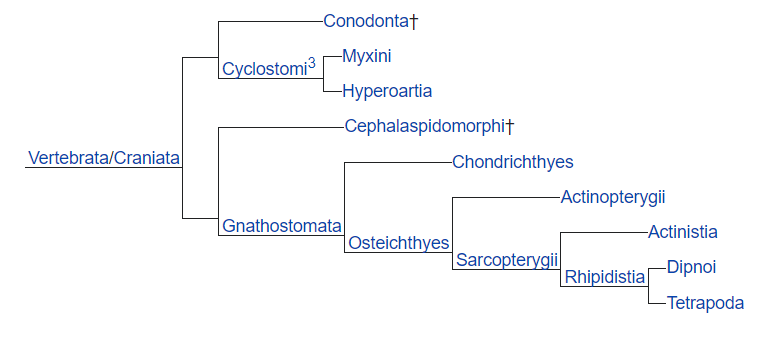
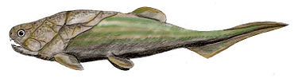

Segun Wikipedia los peces (del latín pisces) son animales vertebrados primariamente acuáticos, generalmente ectotérmicos (regulan su temperatura a partir del medio ambiente) y con respiración por branquias. Suelen estar recubiertos por escamas, y están dotados de aletas, que permiten su movimiento continuo en los medios acuáticos, y branquias, con las que captan el oxígeno disuelto en el agua. El grupo Pisces no es un taxón porque sería parafilético. Los peces son abundantes tanto en agua salada como en agua dulce, pudiéndose encontrar especies desde los arroyos de montaña (por ejemplo, el gobio), así como en lo más profundo del océano (por ejemplo, anguilas tragonas). Los alimentos preparados con pescado son una importante fuente de alimentación para los seres humanos. Pueden ser grandes partir de ejemplares silvestres, o criados de manera similar al ganado (véase acuicultura). Hoy en día la llamada pesca deportiva cada día se vuelve una actividad más popular. Los peces han tenido un papel importante en muchas culturas a través de la historia, que van desde las deidades religiosas a temas de libros y películas. La especialidad de la zoología que estudia específicamente a los peces se denomina ictiología. La mayoría de los peces son ovíparos y, como tal, tienen una fecundación externa.
El grupo de los peces es parafilético y se define como todos los vertebrados que no son tetrápodos, es decir, por la exclusión de un taxón (los tetrápodos) de otro mayor (los vertebrados), y no por la posesión de características derivadas comunes (apomorfías). Las especies hoy existentes pertenecen a tres grupos (a veces considerados clases, a veces superclases):
Agnatos o peces sin mandíbulas, que incluye unas pocas especies actuales (lampreas y mixines). Es un grupo parafilético.
Condrictios o peces cartilaginosos, que incluyen a tiburones, rayas y quimeras, caracterizados por poseer hendiduras branquiales externamente visibles y un esqueleto compuesto sólo de cartílago. Son un grupo de vertebrados muy basales, pero muy exitosos evolutivamente, ya que los tiburones son animales antiquísimos que no han cambiado mucho desde su origen.
Osteictios o peces óseos, con esqueleto óseo y branquias protegidas mediante un opérculo. A su vez se subdividen en:
arcopterigios, peces óseos con aletas lobuladas. Son un grupo parafilético de los tetrápodos (vertebrados provistos de cuatro patas); los primeros anfibios se originaron a partir de sarcopterigios primitivos.
Actinopterigios, peces óseos con aletas provistas de radios.
Los peces se originaron a partir de otros cordados hacia el inicio del Cámbrico. No se sabe a ciencia cierta exactamente dónde fijar su origen; el grupo más primitivo de los peces conocidos corresponde a los ostracodermos, a partir del cual descienden los modernos agnatos (que comprende a las lampreas y a los mixines). Uno de los más importantes logros evolutivos fue el desarrollo de mandíbulas a partir de los arcos branquiales, puesto que permitió a los peces primitivos alimentarse de trozos mayores, capturar presas, triturar, etc. Dentro de los primeros peces con mandíbulas se encuentran los placodermos, que aparecieron hacia el final del silúrico. Los vertebrados terrestres se diferenciaron a partir de peces de aletas lobuladas, emparentados con el celacanto o los dipnoos.21
Muchos tipos de peces llevan a cabo migraciones regularmente, en escalas que van del día a día hasta anuales, y con distancias que van desde pocos metros hasta miles de kilómetros. El fin generalmente se relaciona con la alimentación o la crianza; en algunos casos la razón para la migración sigue siendo desconocida.
Clasificación de los peces migratoriosviajan entre agua salada y dulce. (Griego: día significa entre)
, viven principalmente en agua salada y se aparean en dulce. (Griego: ana significa arriba).
, viven en agua dulce y se aparean en agua salada. (Griego: cata significa abajo).
se mueven entre agua dulce y salada durante su ciclo de vida, pero no por apareamiento. (Griego: amphi significa ambos)
, migran solo en aguas dulces. (Griego: potamos significa río).
, migran solo en aguas saladas. (Griego: océanos significa océano)
Los peces anádromos más conocidos son los salmones (Salmo salar), que eclosionan en pequeñas corrientes de agua dulce, bajan al mar y viven varios años; después vuelven a los mismos ríos donde nacieron, desovan, y poco después mueren, algunos vuelven al mar para volver al río al año siguiente o al cabo de algunos años; como especie son iteróparas, pero su mortalidad durante la migración es muy alta y por eso se creía que era semélpara, es decir que se reproduce y muere.
El pez más notable dentro de los catádromos es la anguila de agua dulce, cuyas larvas flotan a la deriva en el océano abierto a veces por meses o años, antes de viajar miles de kilómetros a sus riachuelos originarios, donde se desarrollan hasta alcanzar su estado adulto, para regresar al océano a desovar.
La migración vertical diaria es un comportamiento común; muchas especies marinas se dirigen a la superficie en la noche para alimentarse; luego vuelven a las profundidades durante el día.
Un gran número de peces marinos, como el atún, migra de norte a sur anualmente, siguiendo las variaciones de temperatura en el océano. Esto es de gran importancia para la pesca.
Las migraciones de peces de agua dulce son habitualmente más cortas, por lo general desde un lago a un río o viceversa, por motivos de desove.
Los peces, así como otros organismos acuáticos, pueden clasificarse ecológicamente por su tolerancia a distintas salinidades, en eurihalinos o estenohalinos, así como por otros aspectos de su adaptación.